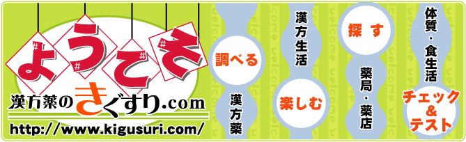

トップ > はじめての方へ
きぐすり.com は、漢方薬、女性の健康、サプリメント、ハーブの情報を専門家がやさしく解説しています。

日本全国の漢方専門薬局・薬店の紹介、あなたの街の信頼出来る漢方薬・生薬認定薬剤師や豊かな経験を持つ先生にまずはご相談下さい。
また症状からの漢方的治療法をはじめ、漢方薬、女性の健康、サプリメント、ハーブの情報を専門家がやさしく解説しています。ぜひ、病気予防に健康増進にご活用ください。

漢方薬などをご購入、ご使用の注意点
漢方薬を安全にご利用頂くために、必ず漢方専門の医師または薬剤師とご相談ください。
「漢方薬のきぐすり.com」に掲載しております漢方処方や生薬情報は、専門家の知識や経験を生かし、一般の方々にも判りやすいように説明しています。
しかし、情報の中には古い文献の引用や、現在使用頻度が低くなったもの、また販売されなくなったものも含まれています。流派の違いなどの理由から処方の内容や量が異なることもあります。
「漢方薬のきぐすり.com」では、それら過去から移り変わる情報も加えて紹介しております。よって、その点をふまえて漢方薬などをご購入、ご使用の際は、安全にご利用頂くために、必ず漢方専門の医師または薬剤師とご相談ください。
ご覧になられる方の健康増進に役立てていただければ幸いと願っています。
具体的な注意例：次の人はご使用前に必ず医師又は薬剤師にご相談ください。
- 医師の治療を受けている人
- 妊娠又は妊娠していると思われる人
- のぼせが強く赤ら顔で体力の充実している人
- 今までに薬により発疹・発赤、かゆみ等を起こしたことがある人
- その他、アレルギー体質の人
- 胃腸の弱い人
- 下痢しやすい人…など
素人療法や無理な継続使用をされますと、症状が悪化したり、意外な副作用を見たり、食べ物との相互作用により体調を崩す場合がありますので、くれぐれもご注意ください。